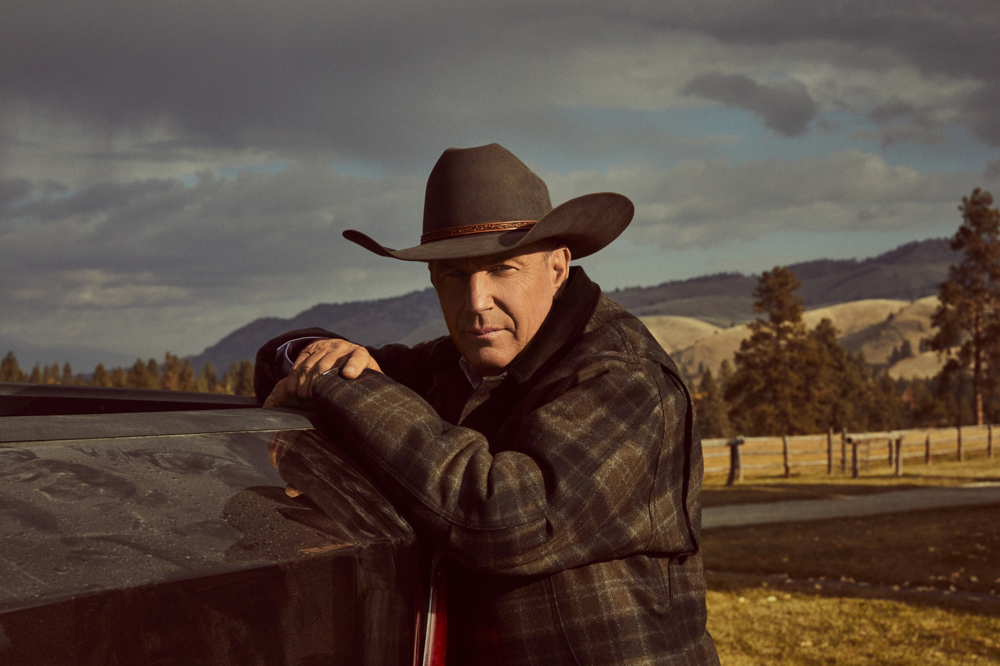
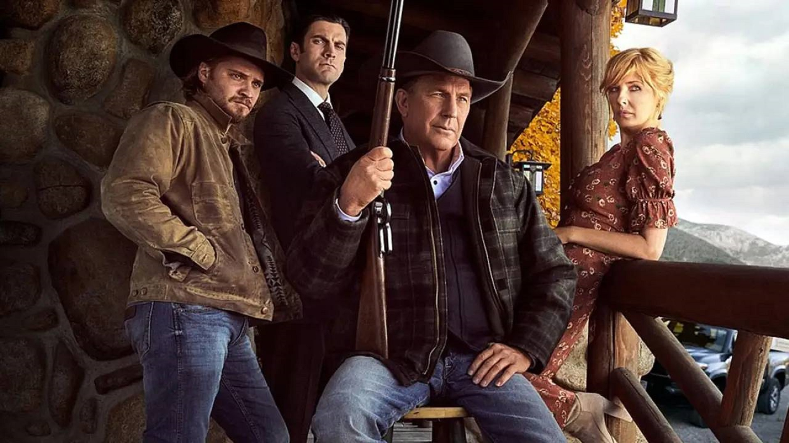
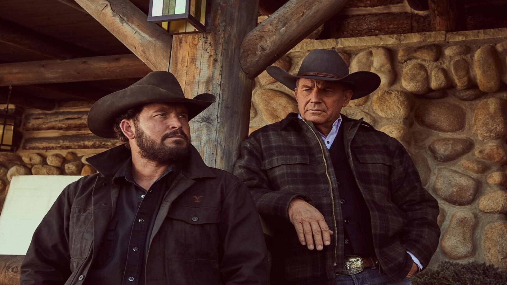
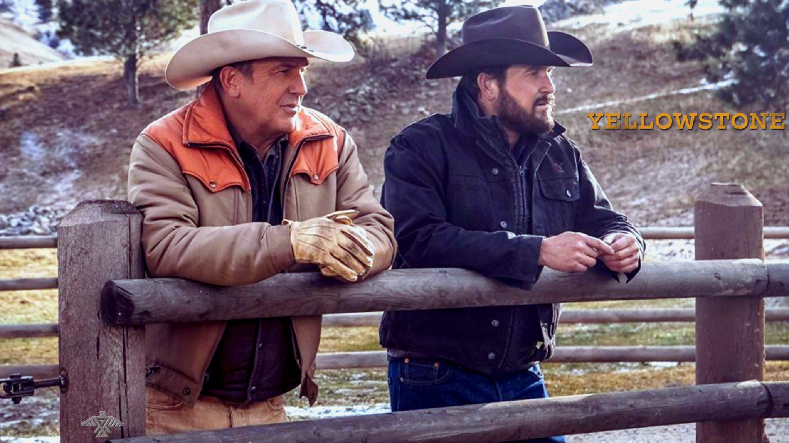
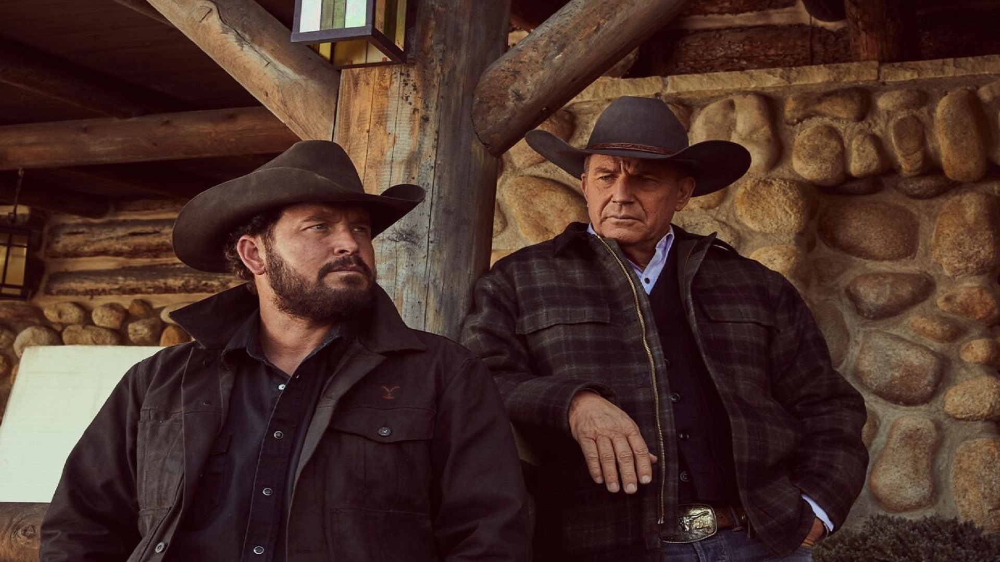
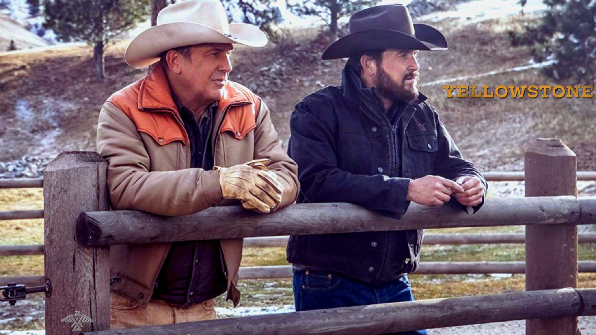
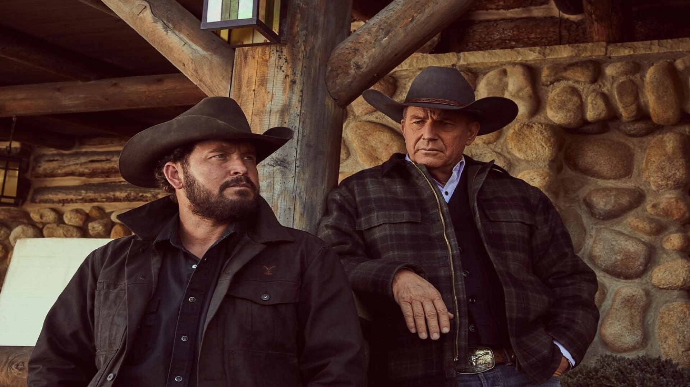
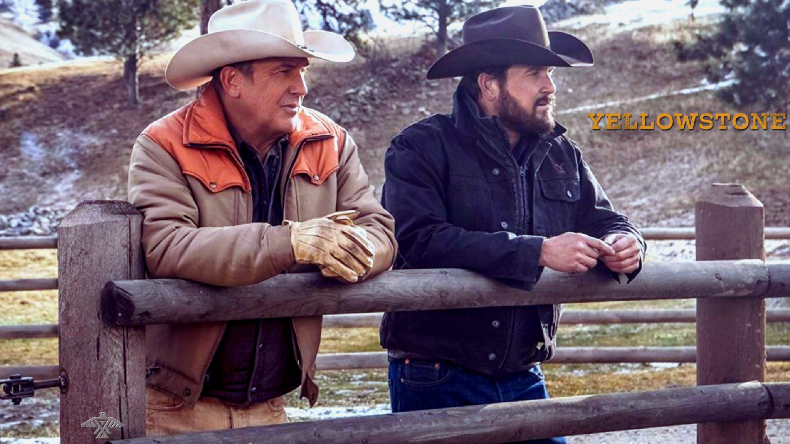
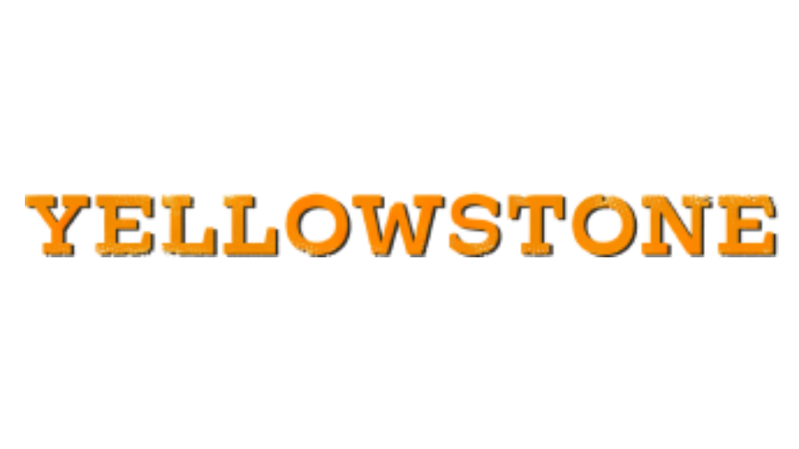

 






Yellowstone acompanhado a luta, por vezes violenta, de uma família do interior do estado de Montana, nos Estados Unidos, contra a reforma de sua propriedade. A família Dutton, comandada pelo patriarca John (Kevin Costner), tem um grande império latifundiário e se recusa a abrir mão de qualquer milímetro das terras que herdou. De um lado, grandes imobiliárias querem a propriedade para desenvolver o comércio local e expandir o espaço urbano, e do outro, comunidades indígenas protestando contra a tomada ilegal de terras pertencentes aos nativo-americanos. Mas independente de qualquer coisa, a família Dutton não pretende dar o braço a torcer e perder seu poder.